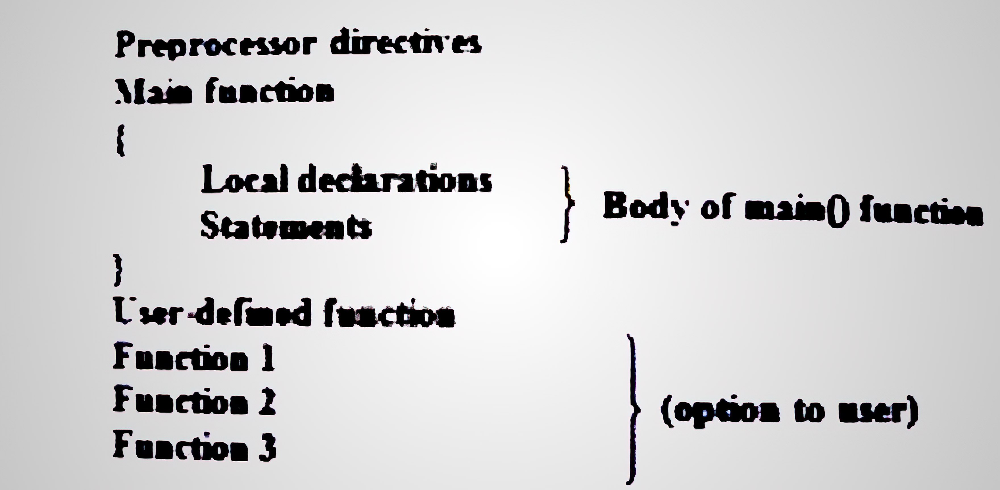

STRUCTURE OF A C Program First you have to install Dev-C++ software to learn C language.Its structure is as following.

- Preprocessor Directives
Preprocessor directives are instructions for C compiler. Every C language program contains certain preprocessor
directives at the beginning of the program. Before translating at C language program into machine language,the
compiler of C language carries out the processor directives. Directive start with number sign (#).Most commonly
used preprocessor are #include and #define.